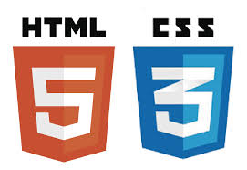

Bienvenidos al OVI en formato WEB con HTML5 y CSS3
El aprendizaje basado en proyectos posee las siguientes fases: Comprensión, Diseño, Construcción, Aprobación y Mantenimiento.
Diseño de Paginas WEB
Cómo funciona HTML
Los documentos HTML son archivos que terminan con una extensión .html o .htm. Puedes verlos usando cualquier navegador web (como Google Chrome, Safari o Mozilla Firefox). El navegador lee el archivo HTML y muestra su contenido para que los usuarios de Internet puedan verlo. Por lo general, el sitio web promedio incluye varias páginas HTML diferentes. Por ejemplo: las páginas de inicio, las páginas de acerca de y las páginas de contacto, todas tendrán documentos HTML separados. Cada página HTML consta de un conjunto de etiquetas (también denominadas elementos), a las que te puedes referir como los componentes básicos de las páginas web. Crean una jerarquía que estructura el contenido en secciones, párrafos, encabezados y otros bloques de contenido. La mayoría de los elementos HTML tienen una apertura y un cierre que utilizan la sintaxis. A continuación, puedes ver un ejemplo de código de cómo se pueden estructurar los elementos HTML:
Objetivos Generales
Resumen de las etiquetas HTML más utilizadas
Cómo funciona HTML
Los elementos de nivel de bloque ocupan todo el espacio disponible y siempre comienzan una nueva línea en el documento. Los encabezados y párrafos son un gran ejemplo de etiquetas de bloque. Los elementos en línea solo ocupan el espacio que necesitan y no comienzan una nueva línea en la página. Por lo general, sirven para dar formato a los contenidos internos de los elementos a nivel de bloque. Los enlaces y las cadenas resaltadas son buenos ejemplos de etiquetas en línea.
QUE ES CSS3
Aplicaciones o usos de css3
1. Botones y HTML: Mostramos algunas insuficiencias del HTML en el diseño de formularios y en concreto en el retoque de botones de envío de formularios. 2. Botones y CSS: Explicamos las mejoras que pueden obtenerse por el uso de hojas de estilo en la creación de formularios y, más concretamente, los botones de envío. 3. Botones e imágenes: Como podemos mejorar los botones con el uso de imágenes en lugar de botones de submit corrientes. 4. Botones, CSS y tablas: Vamos a mejorar los botones normales, que al hacer click hacen efecto de pulsación, con imágenes a los lados para mejorar su aspecto. 5. Botones, imágenes y eventos: Para que los botones de imagen no ignoren los eventos de teclado, vamos a utilizar una función Javascript. 6. Botones, tablas y eventos: Ampliamos el ejemplo anterior para que el texto de los botones se pueda editar fácilmente, sin perder en presentación.